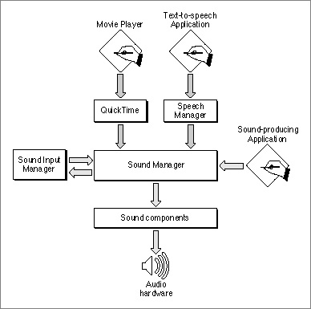

Important: Inside Macintosh: Sound is deprecated as of Mac OS X v10.5. For new audio development in Mac OS X, use Core Audio. See the Audio page in the ADC Reference Library.
About the Sound Manager
The Sound Manager is a collection of routines that your application can use to create sound without a knowledge of or dependence on the actual sound-producing hardware available on any particular Macintosh computer. More generally, the Sound Manager is responsible for managing all sound production on Macintosh computers. Other parts of the Macintosh system software that need to create or modify sounds use the Sound Manager to do so. Figure 2-1 shows the position of the Sound Manager in relation to sound-producing applications and to other parts of the system software, such as the Speech Manager and QuickTime.Figure 2-1 The position of the Sound Manager

The Sound Manager was first introduced in system software version 6.0 and has been significantly enhanced since that time. Prior to system software version 6.0, applications could create sounds using the Sound Driver.
This section describes the three basic ways of defining sounds, namely using wave-table data, square-wave data, or sampled-sound data. Usually, you'll use sampled data to define the sounds you want to create, because sampled data provides the greatest flexibility and variety of sounds. You might use wave-table or square-wave data for very simple sounds. For instance, the Simple Beep alert sound is defined using square-wave data. Most other alert sounds are defined using sampled-sound data.
- IMPORTANT
- To ensure compatibility across all models of Macintosh computers, you should always use the Sound Manager rather than the Sound Driver, which is no longer documented or supported by Apple Computer, Inc. The Sound Manager is simpler and much more powerful than the Sound Driver. Moreover, Sound Driver code might not work on some Macintosh computers.

This section also describes sound commands and sound channels, which you need to know about to be able to do anything more complex than play sound resources or files synchronously using high-level Sound Manager routines.
Subtopics
- Sound Data
- Sound Commands
- Sound Channels
- Sound Compression and Expansion